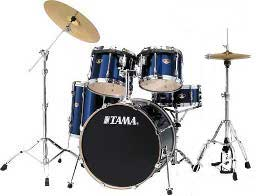

2012 年
02 月 01 日 ( 水 )
どこでどのようなメンバーでかは明かせませんが、昨夜ドラムを叩く依頼を受けました。4月末に本番が予定されています。健康状態を整えなければ。
02 月 02 日 ( 木 )
今日は昨日書いた演奏の打ち合わせをしてきました。
カバー曲を 3 曲、オリジナルを 1 曲つくって、計 4 曲を 4 月末に間に合わせることになりました。
カバー曲は今日の打ち合わせで 2 曲は決めました。あと 1 曲は…どうしましょうかね…私も候補をだしてもいいんですかね？
それとついでにドラム・セットの確認をしてきました。前回そこのドラム・セットを使った時が悲惨な状況だったので、今日は徹底的に倉庫を漁ってきました。
確認できたのがスツール、スネア、タムが二つ、バスドラム、フロアタム、ハイハット、クラッシュ、ライド。下のようなよくある 2 タム、1 フロアのセット・パターンです

今回は前回と違ってスツールもちゃんと高さが調整できます。これで今回はスネアのヘッドが胸の高さにこなくてすみます！！
ビーターシャフトが曲がっていたりしますが気にしません。今回は個人持ちのチューニングキーがあるので、ちゃんとビーターシャフトを固定してバスドラムの音を出すことができます！！
ハイハットがなぜか 2 セットありますがハイハット・スタンドの一つは粉砕されていて 1 セットだけしか使えません。でも複数のハイハットを使うような音楽はやらないので問題ありません。ハイハット本体も茶色く錆びているような気がしますが見なかったことにします！！
スネア、タム、バスドラムもフープを含めた金属パーツがのきなみ錆びているような気がしますが、それも見えないはずという神の声を聞いたような気がします！！
どれだけ探してもシンバル・スタンドが一つしかありません。仕方がないので演奏中にライドとクラッシュを瞬時に差し替えるという必殺技を…できるかーっ！！そんなこと！！ (ﾉﾟдﾟ)ﾉ 彡┻━┻ とヤケを起こしてはならぬという御仏の声を聞いたような気がします！！
ライドやクラッシュにユーラシア大陸のようなシルエットの錆びがでていようが、グネグネと波打っていようが、それこそがエフェクトシンバル！！と自分をだまして乗り切ろうと思います！！
さて、カバー曲の譜面を起こしますかね。カバーする曲の片方は絶対にラストに 16 小節ギターソロを付け加えたほうが良くなると思うので。元曲がなんだか C メロでいきなり終っちゃう印象なんですよね。変った構成の曲です。
02 月 04 日 ( 土 )
4 月末の音楽祭で演奏するカバー曲 2 曲のコード譜を書きました。うち 1 曲は日本人向けにコード構成を変更しています。
またその曲は短すぎて盛り上がりが足りないので、曲の末尾にギター・ソロを 16 小節、アウトロを 8 小節追加しました。ギター・ソロのコード構成は元曲を参考に日本人向けの構成にしています。
採譜は約 20 年ぶりなので自信のないところはネットを参考にしようとしたのですが、残念ながらまったく参考になりませんでした。日本にも楽譜や TAB 譜を Web で公開している人がいますが、改めて日本のギタリストのレベルの高さを認識しました。
02 月 08 日 ( 水 )
今日は 4 月末の音楽祭に向けての初回のリハでした。
残念ながらドラムセットの写真を撮り忘れたので、どれだけ傷んだドラムセットなのかを今日はお見せすることはできませんが、シンバル類のメンテナンスを予定しているので、私が忘れていなければそのときに錆びたシンバルとかハイハットとかの映像をお見せできると思います。
先日ちょろっと触れたようにドラムセットは倉庫に放り込まれているのですが、倉庫は建物の 1 階にあります。で、練習する部屋はというとその建物の 2 階にあります。フロアが違うわけですね。
保管場所と練習場所が違うとどうなるのかというと、倉庫で中途半端に組まれたセットを一度バラして 2 階の練習部屋に搬入して組み立てるという作業が発生するわけです。
この分解、搬入、セッティングの作業だけで、今日は 30 分近くかかってしまいました。この 30 分にチューニングの時間は含みません。
ちなみに準備から撤収までに与えられた時間は 60 分です。ですから実質的なリハに与えられた時間は 20 分程度でしょうか。某所は我々にリハするなと言ってるのでしょうか |||||(=_=｡)|||||
小さなセットにもかかわらずセッティングに 30 分もかかってしまったのは、あちこちのチューニング・ボルトが外れていたり、ヘッドがユルンユルンすぎて音がでない状態だったのを少し絞め直してかろうじて音がでるようにしたり、他にもいろいろ調整しないと音がだせないたためでもありました。パーツやハードウェアがないのはどうしようもありませんでしたが！！
ですが実は、今日は時間がかかってもメモリー・クランプだけはできるだけ設定しようとした、というのもあったりします。一つだけ除いておおむねセットできたと思います。しかしなんでタムホルダーのメモリー・クランプのボルトが無くなってるのかな！？
実はセッティングのときに直したくても時間が押していて直せなかったものがあります。それはなにかというとハイハットクラッチです。だれがハイハットとハイハットクラッチのセッティングをしたのか知りませんが……間違ってるよ！！正しくはこうだよ！！ベースとギターが打ち合わせてるすきに、さくっと直しておきました。
そんなこんなで 2 曲ほどリハをしたのですが、普通に叩くと Ride がなんだかゴワンゴワンとした音がします。スティックを変えたり叩くポイントを変えたりいろいろ試行錯誤してみました。
シンバルには穴がありますよね？その穴から 1cm 以内のところを軽く鳴らせばちょっとはましな音になる、ということがわかりました。そんなわけで Ride を鳴らすときは、穴から 1cm 以内にスティックのチップを落すという細かい技を繰り出すことになりました。私はこれをカップの音とは認めません！！
そんなわけで 20 年弱ぶりにドラムを演奏したわけですが、やっぱり叩けなくなってますね。フィルインのアイディアが練り込まれていない状態で無理矢理演奏すると、やはり演奏がよれてしまいます。もう少し練習が必要です。アドリブは音楽祭まで時間がないのと、個人練習をする場所、個人持ちの楽器がないので、叩けるようにする予定は今のところありません。
それともう一方の曲のアレンジに関するアイディアが採用されました。シンコペーションを入れるだけですけどね。まぁ、オリジナルよりは良くなりました。
ちなみに、このサイトにはドラムの話題が多いですが別にドラム関連のサイトではないので念のため。ドラムの話題が多く見えるのはたまたまですよ。
02 月 14 日 ( 火 )
諸般の事情で昨日の楽器のメンテナンスは中止に。いろいろあってぼくはもう疲れたよパトラッシュ…
02 月 15 日 ( 水 )
今朝某所にでかけてみたら Vo. がかけあってドラムのセッティングの時間をリハの時間とは別枠で確保したと聞きました。しかし結局それは話だけで終っていました。
実際に搬送にとりかかろうとしたらスタッフからストップがかかり、結局ドラムの搬送からセッティングをリハの時間に含めることになってしまいました。リハのために部屋を 1 時間フルに使えるようになって助かると思ったのですが残念です。
したがってリハが足りない前提で、そういう仕上りで我慢することになります。我慢と忍耐の日々です。
で、今日の最重要項目と個人的に位置づけていたのですが、ドラム・セットのセッティングの見直しとシンバル・ミュートを試してきました。
シンバル自体がもともと低品質であることもあり、シンバル・ミュートはやっても無駄状態でした。しかしセッティングの見直しは正解でした。多少は演奏しやすく目的の音もだしやすくなりました。特にスネアのセッティングは某ドラム・テックさんの技をパクって、クローズド・リムショットが快音です。
02 月 19 日 ( 日 )
リチャード・クレイジーマンさんの新作！！
pixiv のアカウントを持ってない人はこちら。
実はけいおんはアニメもまんがも見てないの。ファンの人達、ごめんね。
でもテレビを買うお金もないし、まんがを買うお金もないので許してね。
ちなみに自分が使うことになるセットの最終構成はこんな感じ。

なんか足りなくね？と思った人正解です。これがオリジナルの状態。

某所の管理がアレでシンバル・スタンドを紛失しているのでクラッシュはなしに。Ride の方が重要かなと。しかしどうすればシンバル・スタンドみたいにでかいものを紛失できるんだろう。
02 月 22 日 ( 水 )
決めないといけないことが、ちゃっちゃと決まらなくて、なんだか落ち着かない昨今です。来週にはセットリストを揃えたいところです。
そんなこともあり、来週の水曜日までに各自 1 曲書いてくることに。
それと今日はバスドラの鳴りを生かしたかったので、セッティングをフローティング状に変えてみました。そこそこ鳴りが良くなったような気がします。なので本番までこれで行くことにします。
それとマイク・スタンドをシンバル・スタンドのかわりに使うという荒技で、次回のリハから Crash シンバルも使うかもしれません。